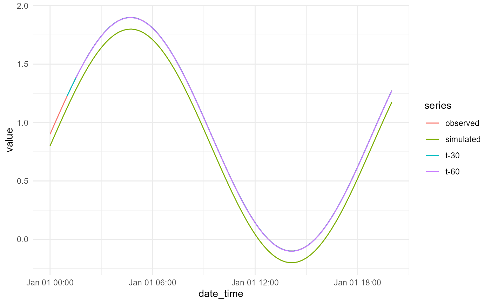

Plot fixed lead-time observations, simulations and updates
Source:R/08-accessors-plots.R
plot_lead_times.RdCreate a ggplot2 time-series comparison for all evaluated lead times.
Arguments
- x
A fixed lead-time result from
fixed_lead_ar().- thresholds
Optional data frame or
data.tablecontaining threshold values and, where supported, display names. Values must use the same units as the forecast series.- common_period_only
Logical. When
TRUE, trim the display to the period where every requested lead has a calculated update. This supports fair visual comparison across leads.
Value
A ggplot object that can be printed, modified or saved with
ggplot2::ggsave().
Examples
time <- as.POSIXct("2024-01-01", tz = "UTC") + 0:80 * 900
simulation <- 0.8 + sin(0:80 / 12)
observation <- simulation + 0.1
aligned <- align_forecast_series(
data.frame(date_time = time, value = observation),
data.frame(date_time = time, value = simulation),
interval_minutes = 15
)
result <- fixed_lead_ar(
default_ar_parameters(), aligned, c(30, 60)
)
plot_lead_times(result)
#> Warning: Removed 10 rows containing missing values or values outside the scale range
#> (`geom_line()`).
